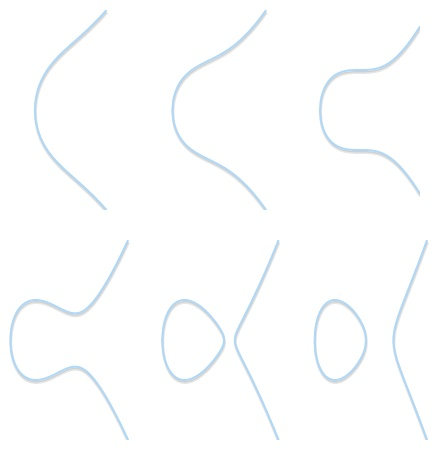

哈希函数
在讲数字签名之前，首先介绍一个神奇的函数：哈希函数（hash function）。
一个基本的哈希函数需要满足3个性质：
- 输入字符串的长度可以是任意长（any length）；
- 输出字符串的长度总是固定的（fixed length）；
- 哈希函数的处理过程要足够快（efficiently computable）。
根据这三个性质，你会发现 $h(x)=1$ 也是一个哈希函数，不管输入是什么，输出都是1。当然，这个计算过程足够快（根本就不用算）。
类似 $h(x)=1$ 这样的哈希函数并没有什么实际用途，因此我们引入加密哈希函数，也叫密码散列函数 （cryptographic hash function）。加密哈希函数需要满足额外的3条性质[1]：
1. 防碰撞性（Collision‐resistance）
对于哈希函数 $H$ 来说，很难（infeasible）找到两个不同的输入 $x\ne y$ ，使得 $H(x)=H(y)$。
换言之，输入不同，输出几乎不会相同。注意这里说的是很难 （infeasible）找到，而不是不能 **（impossible）**找到。对于不同的输入 $x\ne y$ ，经过哈希函数 $H$ 后，得到相同的输出 $H(x)=H(y)$ ，这叫做哈希碰撞（hash collision）。很显然，把任意长度数据的集合一一映射到固定长度数据的集合是不可能的。前者中元素的个数要远大于后者中元素的个数。因此，碰撞一定存在，只是很难找到。找到碰撞的唯一办法就是暴力穷举。
假设输出字符串长度为256位，则只要找 $2^{256}+1$ 个不同的输入，必定能保证其中两个输出是重复的。实际上，我们只需要 $2^{130}+1$ 个不同的输入，就有超过 99.8% 的概率存在相同的输出，产生哈希碰撞。具体计算过程可以参考生日悖论(Birthday Paradox)。
即便如此，暴力穷举 $2^{130}+1$ 个输入也要算到天荒地老，即便宇宙毁灭都不一定能找到一组哈希碰撞。因此，加密哈希函数的防碰撞性可以理解为：输入不同，则输出不同。
注意：这里暴力穷举法来寻找哈希碰撞适用于所有的哈希函数。但是，如果给定某一个具体的哈希函数，我们可能可以找到高效的方法来寻找哈希碰撞。比如这个哈希函数：$H(x)=x\ mod\ 2^{256}$ 。这个哈希函数的输出同样是256位，但是我们可以轻易的找到一组哈希碰撞：$1$和$1+2^{256}$。因此，这个哈希函数并不能算是一个加密哈希函数。
事实上，我们没有办法证明某个哈希函数一定是防碰撞的。对于实际应用中的加密哈希函数，人们经过不断的努力尝试，仍然没有找到一组哈希碰撞，或者没有找到一个高效的方法产生哈希碰撞。但是，现在没有找到不代表以后不会找到，比如之前广泛使用的MD5算法，目前已经被找到哈希碰撞，甚至设计出了产生哈希碰撞的方法。
为什么要把哈希函数设计成防碰撞呢？一个最常用的应用就是信息摘要（message digest）。假设给定两个不同的文件$m_1$和$m_2$，以及一个加密哈希函数$H$，那么$H(m_1)$和$H(m_2)$也是不同的。我们可以用$H(m_1)$代表文件$m_1$，用$H(m_2)$代表文件$m_2$，这就是信息摘要。当我们从网络上下载文件时，如何知道下载的文件没有出错呢？只需要对比下载文件的Hash值和网络上文件的Hash值，如果Hash值不同，则表明文件内容不同，下载过程中可能出现了文件损坏或修改。一个文件的大小可能会从几Kb到几Gb不等，但是文件的Hash值是固定长度的，只有256位。因此，比较两个文件的Hash值要比比较文件本身快得多。
读到这儿，有的小伙伴可能会问：如果只用256位就可以表示任意大小的文件，那我岂不是找到了一种无敌的文件压缩方式，把任意大小的文件都压缩成256位，明年的诺贝尔奖给我安排一下。
别异想天开了，之前我们说过，找不到哈希碰撞不代表没有。肯定会存在某两个不同文件$m_1$和$m_2$，经过哈希函数后产生相同的256位Hash值。这个时候，你是用这个Hash值表示$m_1$呢还是$m_2$呢？更重要的一点，Hash值的计算是不可逆的，这就需要讨论加密哈希函数的第二个性质了：隐藏性（Hiding）。
2. 隐藏性（Hiding）
假设 $r$ 取自一个足够分散（very spread out）的概率分布，那么给定 $H(r‖x)$ 很难（infeasible）找到 $x$。（其中 $||$ 表示连接）
简单来说，就是给定一个Hash值 $H(x)$，几乎不可能找到它所对应的输入 $x$。找到对应输入的唯一办法也是穷举法。
这里之所以涉及到 $r$，是因为 $x$ 所在的集合可能取值很有限。比如我们令 $x$ 是抛一次硬币的结果，这时 $x$ 只可能有两种情况：正面向上或背面向上。不管哈希函数设计的多么巧妙，我们都可以很快的通过穷举法来找到对应Hash值的输入。
但是如果我们令 $r$ 选自于一个足够分散的概率分布，比如 $r$ 选自于256位的字符串，此时把 $r$ 和 $x$ 拼接，也就是把 $r‖x$ 当作输入，即使 $x$ 只有两种情况，$r‖x$ 的情况也会多到让穷举法在有生之年找不到结果。
因此，加密哈希函数的隐藏性可以简单记为：给定输出，不可能找到输入。
这也就解释了为什么不能把哈希函数用来压缩。因为压缩后的数据没办法还原，压缩就失去了意义。
利用加密哈希函数隐藏性的典型应用就是网站密码存储。一般的网站不会直接把用户的密码存到服务器上，如果网站服务器被黑了，那所有的用户密码都以明文的形式暴露给黑客，这是极为不妥的。一般网站会把用户密码的Hash值存在服务器上，每次用户登陆时，验证用户密码的Hash值，如果Hash值一致则密码正确。这样即便服务器被黑，黑客拿到的也只是一堆Hash值，没法反向破解用户的密码。
但是这样做仍然有风险。由于大部分用户设置较为简单的密码，并且用户的密码分布并不均匀。比如很多用户会设置 111111 或者 123456 这种常用密码，而像 &g$d*9 这种不好记的密码几乎不会有用户设置。所以某些黑客会提前准备好常见密码以及对应的Hash值，如果在服务器中发现了相同的Hash值，可以立即确定该用户使用的密码。这种方法叫做彩虹攻击（Rainbow Attack）。
因此，更为安全的方法是网站替每个用户选取一个足够随机的 $r$（一般叫做盐（Salt）），把用户密码 $x$ 和 $r$ 结合的Hash值 $H(r‖x)$ 存储在服务器。在用户登陆的时候，验证Salt和密码结合的Hash值是否和服务器上对应。这样，由于黑客不知道每个用户的Salt，即便提前准备常见密码的Hash表，也无法反向破解。再退一步讲，即使黑客同时也掌握了每个用户的Salt，那黑客得为每一个用户单独准备一份Hash表，一次只能攻破一个用户的密码，效率极其低下。希望黑客碰到了这样的网站还是理智一点提前放弃为好。
3. 谜题友好性（Puzzle friendliness）
假设 $r$ 取自一个足够分散（very spread out）的概率分布，并且给定一个集合 $Y$ ，很难（infeasible）找到 $x$ 使得 $H(r||x)\in Y$。
谜题友好性和隐藏性的描述比较类似，区别在与：隐藏性表示，给定一个Hash值，很难找到对应的输入；而谜题友好性表示，哪怕给定一个目标集合 $Y$，也很难找到一个输入使得其Hash值在目标集合当中。当然，唯一的办法也是穷举。这里引入 $r$ 的目的也是为了防止 $x$ 集合中元素个数过少。
比特币挖矿中的工作量证明PoW正是基于这一特性，我们以后具体再说。
有些地方会把加密哈希函数的三条性质总结为：
1.原像稳定性Preimage resistant：给定 $y$ ，很难找到 $x$，使得 $h(x)=y$。
2.碰撞稳定性Collision resistant：很难找到 $x$ 和 $x’ \ne x$ ，使得 $h(x)=h(x’)$。
3.第二原像稳定性Second preimage resistant：给定 $x$ ，很难找到 $x’\ne x$ ，使得 $h(x)=h(x’)$。
这和前面三条性质讲的意思大致相同。简单来说，对于加密哈希函数：输入不同则输出不同；给定输出找不到输入。
SHA-256
最后，我们简单介绍一种目前较为常用的加密哈希函数：SHA-256。它具有上面所描述的所有性质，同时也是比特币中所使用的哈希函数。SHA-256的处理过程如下图[1:1]：
之前我们说过，哈希函数的输入可以是任意长度的数据，那就需要我们把输入数据切成若干个长度为512bits的小块（图中蓝色部分）来分别处理。如果数据长度不能整除怎么办？先把原始数据进行补位（padding），补到512的倍数为止。具体补位方式可以查看相关文档。
图中黄色的部分叫做压缩函数（compression function），输入768bits数据，输出256bits数据。每一个压缩函数的256bits输出和一个512bits的块结合以后正好是768bits，继续进入到下一个压缩函数。
由于第一个压缩函数只有一个512bits的数据块，因此我们需要人为补充一个256bits的数据。也就是图中红色的部分，成为初始向量（Initialization Vector，IV）。IV的值可以查看相关文档。
最后一个压缩函数的输出同样也是256bits，这就是整个数据经过SHA-256运算后所产生的256位的输出。
可以证明，如果压缩函数 $c$ 是防碰撞的，那么SHA-256就是防碰撞的。
数字签名
在数字世界中，由于数字文件的可复制性，我们需要一种方法来对某一文件进行签名（Signature）。比如我对某项合同表示同意，那么我可以对这个合同文件进行签名；如果我想证明某句话是我说的，我可以对这句话进行签名等等。
在现实世界中，我们可以在合同上签上自己的名字，通过验证笔迹可以确定这个签名是我签的而不是别人伪造的。但是在数字世界中，别人如果复制了我的笔迹，岂不是可以在任意的文件上进行签名了。因此，数字世界中的签名，并不是真的写下自己的名字，而是通过一系列的签名算法实现的。
假设Alice想对文件 $m$ 进行签名，Alice需要准备两串字符：私钥（private key）和公钥（public key）。其中，公钥是由私钥产生的。换言之，私钥和公钥一一对应，如果知道了私钥，则可以计算出公钥。反过来，如果知道了公钥，没办法知道私钥是多少。具体生成私钥和公钥的方式我们之后再讲。
在数字世界中，私钥即代表着身份，凡是知道Alice私钥的人，都可以代表Alice去对文件签名，因此Alice一定要保存好自己的私钥。Alice使用私钥对文件 $m$ 进行签名后得到了文件 $m’$。假设这时Bob想要验证文件 $m’$ 是否真的是Alice签名的，Bob需要知道Alice的公钥。Bob拿着Alice的公钥，对着文件 $m’$ 进行验证，如果验证结果和文件 $m$ 一致，则表明文件 $m’$ 确实是Alice签名的。
一般情况下，我们不对原始文件直接签名，而是对原始文件的摘要进行签名。如果原始文件很大，对原始文件的签名也会很大，Alice要把这两者都发给Bob是很浪费资源的。我们之前说过，文件的摘要就可以代表这个文件，经过哈希函数处理后的摘要则一般很短，比如SHA-256只有256bits。对摘要进行签名就相当于对文件进行签名，这样可以有效节约资源。
总结一下，数字签名的过程分为以下几步：
1. Alice要对文件 $m$ 进行签名
2. Alice准备两串字符：私钥 $sk$ 和公钥 $pk$
3. Alice用私钥 $sk$ 对文件 $m$ 的摘要进行签名：$m’ = sign(h(m), sk)$
4. Bob获取Alice的公钥pk
5. Bob使用公钥 $pk$ ，签名 $m’$ 和文件 $m$ 进行验证
下一节，我们讲一讲神奇的私钥和公钥为什么能对文件进行签名。
ECDSA
上一节我们说私钥和公钥是一一对应的，知道了私钥可以很快计算出公钥，但是知道了公钥却没办法知道私钥（除非暴力穷举）。这一节，我们就来看看在比特币中所使用的数字签名算法：椭圆曲线数字签名算法（Elliptic Curve Digital Signature Algorithm，ECDSA）。
首先，什么是椭圆曲线？椭圆曲线是方程 $y2=x3+ax+b$，$4a3+27b2\ne 0$ 所构成的点集。根据参数 $a$ 和 $b$ 的不同取值，椭圆曲线的形状大概长这样：

当然，在运用ECDSA时，$a$ 和 $b$ 的值要提前约定好。有了曲线之后，我们可以定义一系列根据该曲线的运算了。比如加法运算：在下图中，要计算 $P+Q$ 的值，首先用一条直线把两个点连起来，直线 $PQ$ 会和椭圆曲线有一个交点 $R$，取 $R$ 的对称点 $-R$ 作为 $P+Q$ 的值。

定义完加法之后，乘法便是加法的累加。如果我们需要计算 $3P$ 是多少，只需要计算 $P+P+P$ 的结果即可。以此类推，计算 $nP$ 便是用 $n$ 个 $P$ 相加即可。
通过定义椭圆曲线上的加法和乘法，你会发现一个特点：如果 $Q=nP$ ，并且告诉你 $n$ 和 $P$ 的值，你可以很快计算出 $Q$ 是多少；但是如果我告诉你 $P$ 和 $Q$ 的取值，你并不能很快的计算出 $n$ 是多少。这就是著名的对数问题（logarithm problem）。讲到这儿，你是不是就大概搞懂私钥和公钥是怎么来的了。
在实际运用中，我们就是使用 $Q=nP$ 这个简单的公式。其中 $P$ 是给定的点，所有人都可以知道。 $n$ 是私钥，是一个随机生成的很大的数；$Q$ 便是公钥，是利用椭圆曲线根据私钥计算而得的。
讲完私钥和公钥是怎么来的，我们再来看看为什么在数字签名中，Bob可以拿Alice的公钥来验证Alice的签名。回顾Alice的签名过程：
1. 首先要计算待签名文件 $m$ 的摘要，即 $e=hash(m)$ 。
2. Alice取一个随机整数 $r$，并且拥有自己的公钥 $K$ 和私钥 $k$ (注意大小写)，其中 $K=kG$，G就是我们之前讲到的 $P$ ，是一个固定的点。
3. Alice计算 $s=r-ek$ （注意：这是一个纯整数运算，不涉及椭圆曲线），并发送 $(s,r,K,m)$ 。此时，任何知道这四个值的人都可以验证Alice的签名。
Bob的认证过程：
1. 假设Bob拿到了Alice发的 $(s,r,K,m)$ 四个值，首先计算文件的摘要，即 $e=hash(m)$ 。
2. 计算 $v_1=rG$ ，$v_2=sG+eK$
3. 如果 $v_1=v_2$ ，则验证成功，是Alice的签名
证明步骤很简单：
$v_2=sG+eK=(r-ek)G+eK=rG-ekG+eK=rG-eK+eK=rG=v_1$
至此，本篇文章详细讲述了哈希函数的三个特点，数字签名的过程，以及简要描述了ECDSA的基本原理。ECDSA的实际运作过程要更加复杂，请参考这里（英文）或这里（中文）。本文图片来源于参考文章。
如果你对本篇文章有任何疑问，欢迎在评论区留言～
参考文章：
- Narayanan, A., Bonneau, J., Felten, E., Miller, A., & Goldfeder, S. (2016). Bitcoin and cryptocurrency technologies: a comprehensive introduction. Princeton University Press.
- Cryptographic Hash Function
- Elliptic Curve Cryptography: a gentle introduction